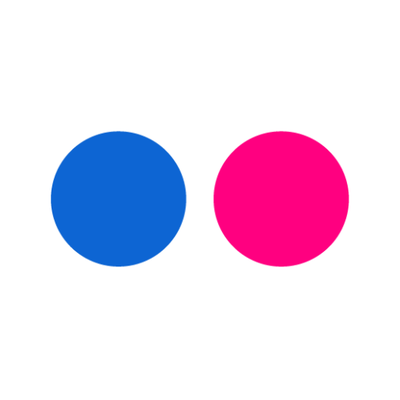

maxence [you know this symbol] larri [dot] eu
social.sciences.re/@mlarrieu
cv.hal.science/maxence-larrieu
github.com/ml4rrieu
orcid.org/0000-0002-1834-3007
twitter.com/ml4rrieu
flickr.com
Without contrary mention, the content of this website is licensed under a Creative Commons Attribution 4.0 International License. CC - BY
 social.sciences.re/@mlarrieu
social.sciences.re/@mlarrieu github.com/ml4rrieu
github.com/ml4rrieu orcid.org/0000-0002-1834-3007
orcid.org/0000-0002-1834-3007 twitter.com/ml4rrieu
twitter.com/ml4rrieu